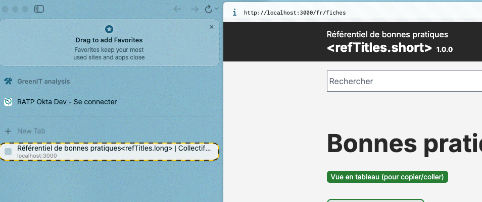

Configuration d'un Réferentiel
Introduction
Tous les référentiels utilisent la même base technique pour simplifier et uniformiser la contribution/consultation/développement.
Langue de l'interface et des contenus
Tous les référentiels sont prêts à être multilingues FR, EN et ES.
Pour toute autre langue, il faudra traduire l'interface.
Création d'un nouveau site
Pour la création d'un nouveau site de référentiel, il faudra fournir toutes les informations détaillées ci-dessous au responsable.
Fonctionnalités proposées :
Point d'attention
Il existe plusieurs configurations de référence selon le référentiel :
- RWEB et RWP : Configurations historiques avec des différences dans les métadonnées
- REIPRO : Référentiel d'intégration de progiciels
- RIA : Référentiel d'utilisation de l'IA générative
- REF_HOME : Page d'accueil portail (agrège tous les référentiels)
Chaque référentiel a ses propres features et métadonnées activées via NEXT_PUBLIC_REF_NAME.
Languages
fr: 🇫🇷 Français,en: 🇬🇧 English,es: 🇪🇸 Español,
Lexique
Le lexique à pour but de partager une explication de certains mots clés. Ce sont des fiches Markdown, mais affichées uniquement dans une page de liste.
Si activés :
- Affichage dans la navigation de
Lexiqueet un lien vers la page de liste ; - Possibilité de contribuer aux fiches dans le CMS.
Souhait d'évolution, que les fiches de bonnes pratiques permettent d'afficher au survol le contenu du lexique.
Lien vers les Personas
Par défaut, il faut assigner des personas aux fiches de bonnes pratiques, mais on peut activer l'affichage d'un lien vers la page décrivant le persona. Il faut donc créer autant de personas que de langues.
Si activés :
- Un lien est cliquable dans la barre des métadonées dans chaque fiche.
Priorité d'implémentation
Obligatoire
Il y deux types d'affichages :
- RWEB : Une note de 1 à 5
- RWP : Une note de 1 à 3 avec des 👍
Impacts environnementaux
Obligatoire
Il y deux types d'affichages :
- RWEB : Une note de 1 à 5
- RWP : Une note de 1 à 3 avec des 🌱
(Difficulté de) Mise en Œuvre
Calcul automatisé utilisant la Priorité d'implémentation et les Impacts environnementaux si ils sont configurés pour utiliser la note de 1 à 5 (sans emoji).
Si activés :
- La note MOE s'affiche dans la barre des métadonnées des fiches.
N'est pas utilisé dans RWP.
Lifecycle (Cycle de vie)
Obligatoire
Les étapes du cycle de vie.
- Specification
- Concept
- Development
- Production
- Utilization
- Support
- Retirement
Scope (Périmètre)
Pour permètre de préciser quand réaliser la bonne pratique en plus du lifecycle.
Comme les BP de RWP s'adressent à des publics différents, la mise en œuvre d'une bonne pratique peut se faire à des moments différents.
N'est pas utilisé dans RWEB.
- Cache
- Documents
- Fonctionnalités
- Images
- Front-office
- Hébergement
- Performance
- Sécurité
- SEO
- Stockage
- Thèmes
- Vidéos/Audios
Si activés :
- En contribution et en front, l'information est disponible.
Tiers
Obligatoire
Indique les tiers impactés par la mise en œuvre de la bonne pratique.
- Utilisateur/Terminal
- Réseau
- Datacenter
Bonnes pratique RGESN
Permet de lier une bonne pratique du référentiel à mettre en œuvre à une ou plusieurs critères du RGESN.
Point d'attention
C'est un champ libre, attention à avoir une consistance dans la manière de contribuer.
Si activés :
- En contribution et en front, l'information est disponible.
Ressources sauvegardées
Obligatoire
Indique les ressources (technique, abioptique, etc.) qui seront moins impactés si la bonne pratique est mise en œuvre.
- Mémoire vive
- Stockage
- Réseau
- Requêtes
- Déchets électroniques
- Consommation électrique
- Émissions de gaz à effet de serre
Données annexes
Obligatoires
trigramme: Nom court du référentiel (ex:RWEB,RWP, etc.)currentVersion: la version en cours. Utilisée dans le header et pour pré-remplir le champ version/RefID d'une fiche (a changer avant toute session de mise à jour) ;creationYear: année de la création du référentiel. Utilisé dans le footercreationYear - currentYear;refTitles[lang].short: utilisés dans le header (ex:Ecoconception webouWordPress). Visualisation dans l'interface, ci-dessous ;refTitles[lang].long: utilisés dans title (par defaut) des pages (ex:Référentiel de bonnes pratiques pour l'Ecoconception webouRéférentiel de bonnes pratiques pour WordPress,Référentiel de bonnes pratiquesest commun à tous les sites). Visualisation dans l'interface, ci-dessous.
